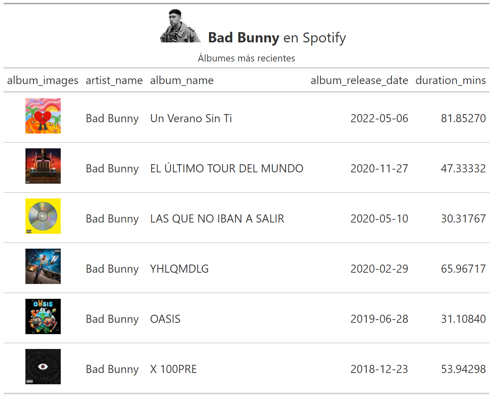
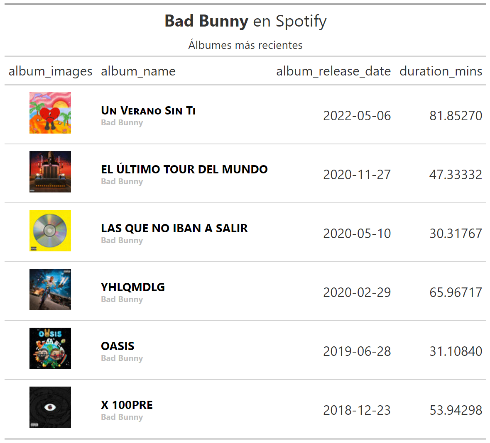
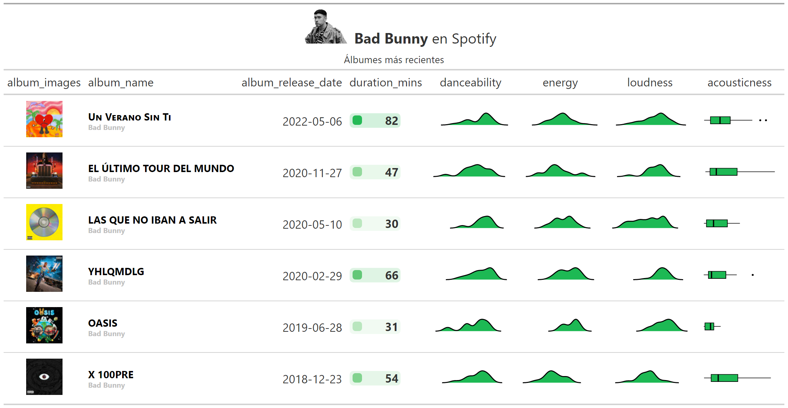
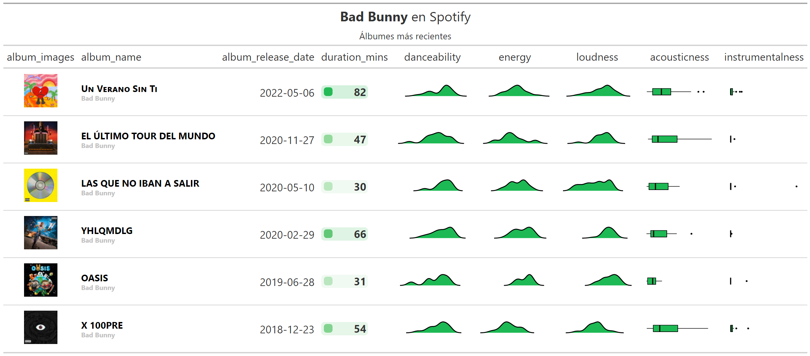
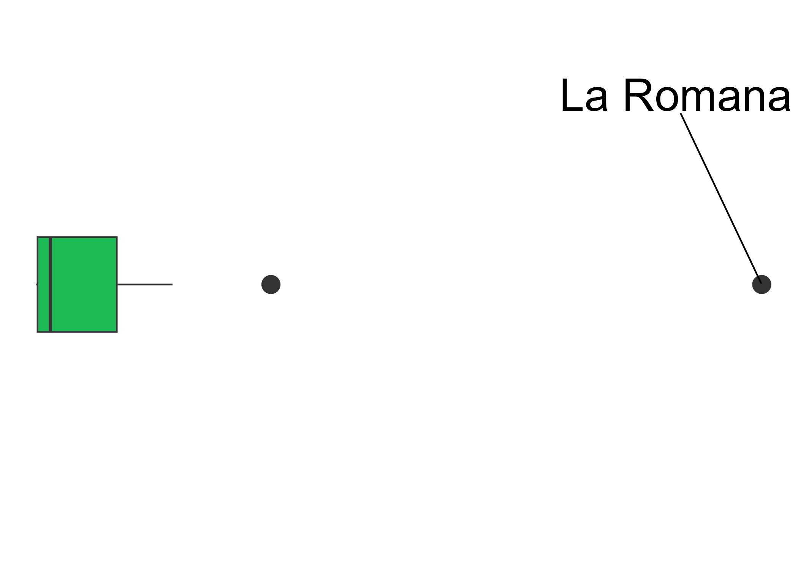
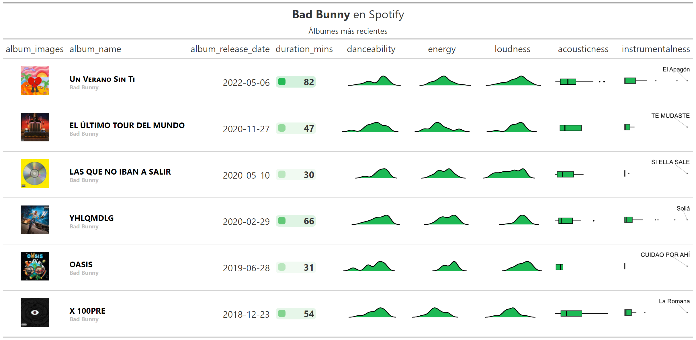
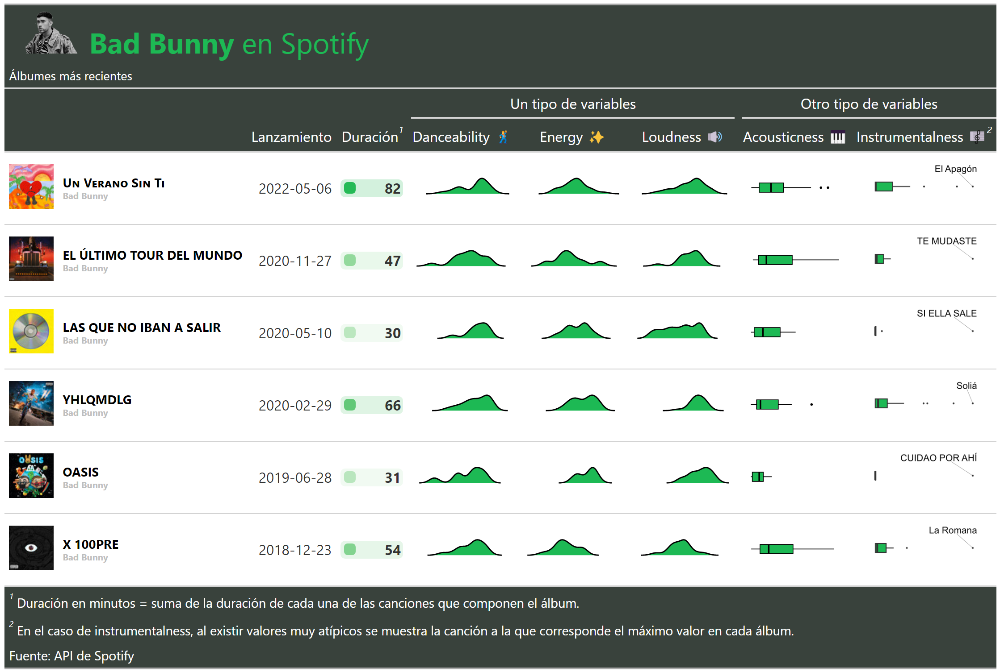

3. The grammar of tables (gt)
De no haber podido autenticarte con la API de Spotify, dejamos un archivo .rds con los datos necesarios para seguir con el resto del taller:
tracks_features <- read_rds('https://github.com/karbartolome/gt-spotify/blob/main/02_caso_spotify/tracks_features.rds?raw=true')Se cuenta con un df de variables vinculadas a cada canción de cada álbum del artista seleccionado:
tracks_features %>%
glimpse()3.1 Intro a gt
tabla <- tracks_features %>%
head() %>%
select(artist_name, album_name, track_name, all_of(vars_audio)) %>%
# En este paso se transforma el df en un objeto gt:
gt()tabla
Notar que las variables numéricas aparecen con muchos decimales. Una forma sencilla de arreglar esto en {gt} es la siguiente:
tabla %>%
fmt_number(columns = where(is.numeric), decimals = 2)
3.2 Tabla a nivel álbumes
Se agregan los datos a nivel de cada álbum. Notar que, en el caso de las variables de audio, se decidió convertirlas en una lista (N observaciones numéricas que representan cada una de las canciones incluidas en el álbum). En los próximos pasos se explicará el por qué de la decisión:
df_albums <- tracks_features %>%
group_by(album_images,
artist_name,
album_id,
album_name,
album_release_date) %>%
summarise(# Duración del álbum: suma de duración de cada canción
duration_mins = sum(duration_ms / (1000 * 60)),
# Lista de cada variable de audio
across(all_of(vars_audio), ~ list(.x)),) %>%
ungroup()tabla_albums <- df_albums %>%
select(-album_images) %>%
gt() tabla_albums
3.3 Imágenes en tablas gt
Se quiere añadir la imagen del álbum. Para ello, se construye la siguiente función. Para cada álbum se cuenta con distintos tamaños de imágenes, donde cada imagen se encuentra representada por un url. Se decide seleccionar la imagen de tamaño=64, extrayendo el url:
get_imagen = function(album_images) {
album_images %>%
data.frame() %>%
filter(height == 64) %>%
pull(url) %>%
as.character()
}Se aplica la función al dataframe. Para ello, se utiliza la función map() del paquete {purrr} 📦:
df_albums <- df_albums %>%
mutate(
album_images = map(album_images,
~ get_imagen(album_images = .x))
) %>%
distinct()Para visualizar los urls como imagenes, se utiliza la función text_transform() de {gt}. Además, la función tab_header() permite añadir título y subtítulo.
imagen_path = 'https://raw.githubusercontent.com/karbartolome/gt-spotify/main/02_caso_spotify/imagenes/bad_bunny.png'
image_size = 50
imagen_artista <- paste0(
"<img src='", imagen_path,"' style='height:",image_size,"px;'>"
)
tabla_albums <- df_albums %>% select(-album_id) %>%
gt() %>%
tab_header(
title = md(glue::glue('{imagen_artista} **{str_to_title(ARTISTA)}** en Spotify')),
subtitle = 'Álbumes más recientes') %>%
text_transform(
locations = cells_body(columns = c(album_images)),
fn = function(album_images) {
lapply(album_images, web_image, height = 50)
}
) De momento, se ocultan las variables de audio para visualizar la tabla:
tabla_albums %>%
cols_hide(all_of(vars_audio))
Otra función útil para visualizar este tipo de información es gt_merge_stack() que permite concatenar dos variables en una única:
tabla_albums <- tabla_albums %>%
gt_merge_stack(col1 = album_name,
col2 = artist_name) tabla_albums %>%
cols_hide(all_of(vars_audio)) 
Para visualizar las variables de audio, se utilizarán algunas funcionalidades del paquete {gtExtras} 📦:
tabla_albums <- tabla_albums %>%
gt_color_box(
columns = duration_mins,
palette = c('white', color_spotify),
domain = c(0, round(max(df_albums$duration_mins)) + 1)
) %>%
gt_plt_dist(
column = danceability,
type = "density",
line_color = "black",
fill_color = color_spotify
) %>%
gt_plt_dist(
column = energy,
type = "density",
line_color = "black",
fill_color = color_spotify
) %>%
gt_plt_dist(
column = loudness,
type = "density",
line_color = "black",
fill_color = color_spotify
) %>%
gt_plt_dist(
column = acousticness,
type = "boxplot",
line_color = "black",
fill_color = color_spotify
)tabla_albums %>%
cols_hide('instrumentalness')
3.4 Ggplot en gt
Notar que si se agregara el boxplot para el caso de la variable instrumentalness, se observa, para todos los álbumes, distribuciones con valores atípicos:
tabla_albums %>%
gt_plt_dist(
column = instrumentalness,
type = "boxplot",
line_color = "black",
fill_color = color_spotify
) 
Por esta razón, se utilizará el caso de esta variable para explicar cómo se podría identificar a estos valores atípicos mediante el uso de {ggplot2} 📦
gen_outliers_plots <- function(.df,
.variable,
.font_size = 22,
.lwd = 3) {
temp <- .df %>%
select(all_of(c('track_name', .variable))) %>%
pivot_longer(cols = -track_name)
track <- temp %>%
slice(which.max(value)) %>%
pull(track_name)
temp %>%
mutate(is_outlier = ifelse(track_name == track, track_name, NA)) %>%
ggplot(aes(y = value, x = name)) +
geom_boxplot(
fill = color_spotify,
width = 0.2,
lwd = .lwd,
outlier.size = 5
) +
geom_text_repel(
aes(label = is_outlier),
na.rm = TRUE,
nudge_x = 0.4,
size = .font_size
) +
coord_flip() +
theme_void()
}Realizando la prueba de la función, se observa el gráfico que genera:
plot <- gen_outliers_plots(
.df = tracks_features %>% filter(album_name == 'X 100PRE'),
.variable = 'instrumentalness',
.font_size = 10,
.lwd = 0.5
)plot
Ahora se incluyen estos plots en la tabla. Primero, se mappea la función al df:
df_albums <- df_albums %>%
mutate(instrumentalness = map(
album_id,
~ gen_outliers_plots(
.df = tracks_features %>% filter(album_id == .x),
.variable = 'instrumentalness')
))Se visualiza la tabla completa:
tabla_albums <- tabla_albums %>%
text_transform(
locations = cells_body(columns = instrumentalness),
fn = function(x) {
map(
df_albums$instrumentalness,
gt::ggplot_image,
height = px(60),
aspect_ratio = 2
)
}
) tabla_albums
Formato
tabla_albums <- tabla_albums %>%
tab_spanner(label = 'Un tipo de variables',
columns = danceability:loudness) %>%
tab_spanner(label = 'Otro tipo de variables',
columns = c('acousticness', 'instrumentalness')) %>%
tab_footnote(
locations = cells_column_labels('duration_mins'),
footnote = 'Duración en minutos = suma de la duración de
cada una de las canciones que componen el álbum.'
) %>%
tab_footnote(
locations = cells_column_labels('instrumentalness'),
footnote = 'En el caso de instrumentalness, al existir
valores muy atípicos se muestra la canción a la
que corresponde el máximo valor en cada álbum.'
) %>%
tab_source_note(source_note = 'Fuente: API de Spotify') %>%
cols_label(
album_images = '',
album_name = '',
album_release_date = 'Lanzamiento',
duration_mins = 'Duración',
danceability = 'Danceability 🕺',
energy = 'Energy ✨',
loudness = 'Loudness 🔊',
acousticness = 'Acousticness 🎹',
instrumentalness = 'Instrumentalness 🎼'
)tabla_albumsAdemás, se añade un ✨theme ✨ específico para asignarle colores y formatos adicionales:
tabla_albums <- tabla_albums %>%
tab_options(
column_labels.background.color = "#39423c",
footnotes.background.color = "#39423c",
source_notes.background.color = "#39423c",
heading.background.color = "#39423c",
heading.align = "left",
) %>%
tab_style(style = cell_text(color = color_spotify, size = px(32)),
locations = cells_title("title"))tabla_albums
3.5 Guardar la tabla gt como archivo .png
Para guardar la tabla, se utiliza la función gtsave() de {gt} 📦:
gtsave(tabla_albums,
'tablas/tabla_final.png',
vwidth = 2000,
vheight = 3000)